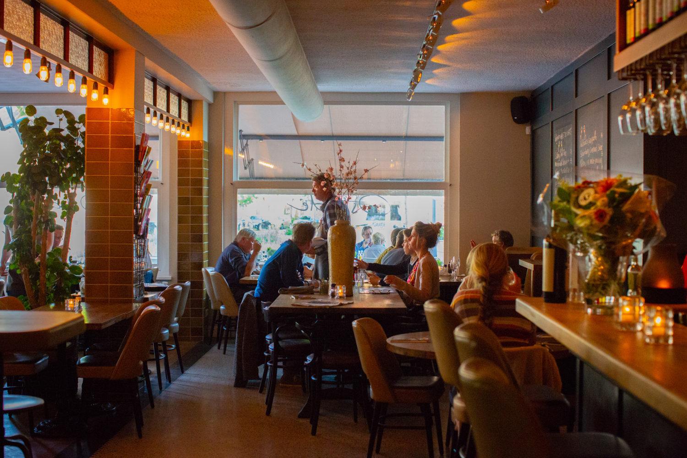
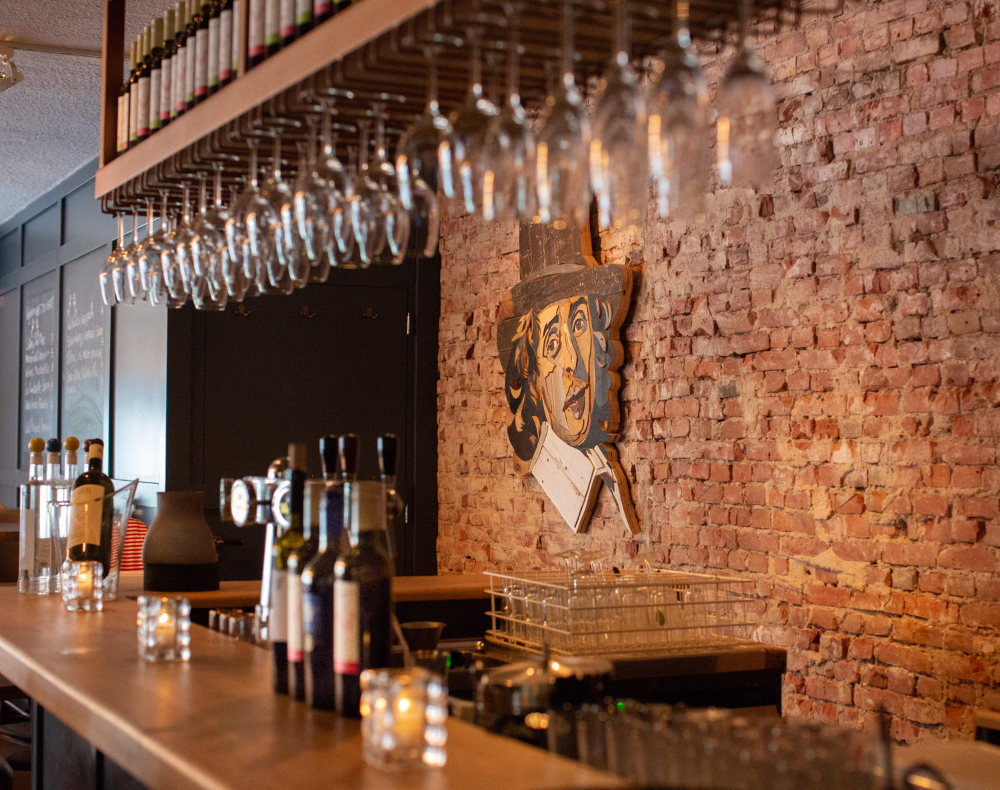
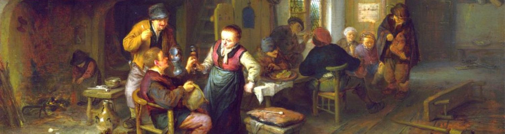
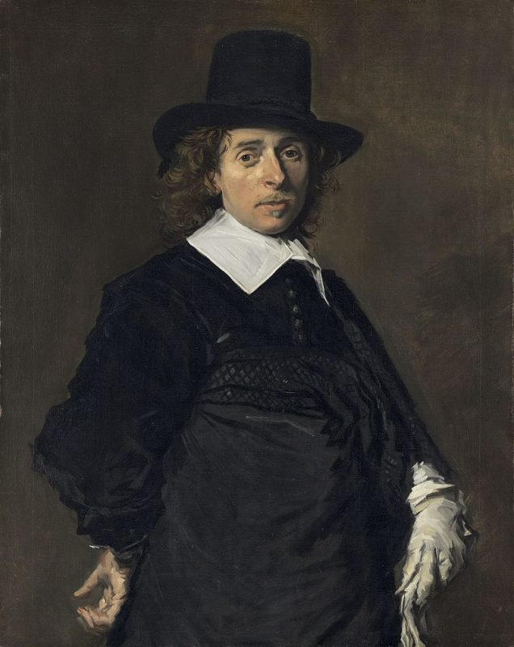
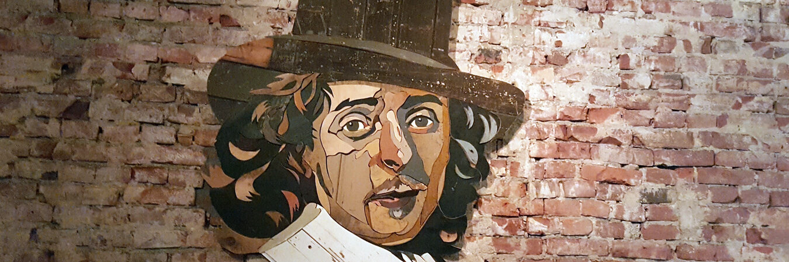

De brasserie in Utrecht Oost
Gezellig, laagdrempelig, goed maar betaalbaar.
Koffie, lunch, borrel en diner aan de Adriaen van Ostadelaan. Zeven dagen per week, vanaf 11:00.
Vandaag open vanaf 11:00
Waarvoor komt u naar Brasserie van Ostade?
Een gezellige plek waar u de hele dag terecht kan voor een kopje koffie, een heerlijke lunch, een lekker diner of gewoon een biertje aan de bar.
De herinrichting van de hoek Bosboomstraat en Adriaen van Ostadelaan biedt ook de ruimte voor een prachtig terras. ’s Winters zit u in ons knusse restaurant, in de zomer op ons uitgebreide, zonnige terras.
De naam geeft aan wat we willen zijn: gezellig, laagdrempelig, goed maar betaalbaar, zoals de huiselijke taferelen op de schilderijen van Adriaen van Ostade.
Tot snel!
Team van Ostade

Koffie
Vanaf 11:00 staat de koffie klaar: binnen, of in de zomer op het terras.
Lunch
Belegde broodjes en klassiekers, geserveerd met Brood van Menno. Tot 16:00.
Borrel
Een biertje aan de bar met bitterballen, kaastengels of nachos.
Diner
Proef van verschillende gerechtjes à la carte of kies voor de wisselende plat du jour.


Wie was Adriaen van Ostade?
Heb je je wel eens afgevraagd naar wie de Adriaen van Ostadelaan is vernoemd?
Adriaen van Ostade leefde van 10 december 1610 tot 28 april 1685 en was één van de grote Nederlandse schilders uit de 17e eeuw. Hij was een leerling van Frans Hals en tijdgenoot van Rembrandt.
Zijn schilderijen tonen het dagelijkse leven van eenvoudige burgers en boeren. Veel voorstellingen gaan over feesten, drinken en vrolijkheid. We vinden zijn naam dan ook erg passen bij onze brasserie.

Het portret dat je bij ons aan de muur ziet is gemaakt door Diederick Kraaijeveld, naar het portret van Adriaen van Ostade door Frans Hals.
Reserveren
Wij verwelkomen u graag binnen of op ons mooie terras. Reserveren kan via de website en ook telefonisch. U kunt natuurlijk ook gewoon langskomen.
Met meer dan 7 personen? Neem dan telefonisch contact met ons op.
Openingstijden & route
| Maandag | vanaf 11:00 |
|---|---|
| Dinsdag | vanaf 11:00 |
| Woensdag | vanaf 11:00 |
| Donderdag | vanaf 11:00 |
| Vrijdag | vanaf 11:00 |
| Zaterdag | vanaf 11:00 |
| Zondag | vanaf 11:00 |
Adriaen van Ostadelaan 65
3583 AB Utrecht
030 737 12 52
reserveren@vanostade.nl
Op de hoek met de Bosboomstraat in Utrecht Oost, vlakbij het Wilhelminapark en Stadion Galgenwaard.
Plan uw routeWerken bij Van Ostade
Van Ostade is een echt buurtrestaurant, met veel vaste gasten en bekende gezichten. Solliciteren kan via info@vanostade.nl, t.a.v. Bas van der Goot.
Zelfstandig werkend kok
Ben je op zoek naar een mooie en creatieve plek in een jong dynamisch team? Ons restaurant ligt in Utrecht Oost, vlakbij het Wilhelminapark en Stadion Galgenwaard.
We zoeken een creatieve kok die graag de handen uit de mouwen steekt, houdt van werken met seizoensgebonden producten en goed is in overzicht en structuur. Er is ruimte voor input: we hebben elke 6 tot 8 weken een wisselend menu en werken naast de vaste kaart ook met gerechten buiten de kaart om. Overdag ben je vooral bezig met de mise-en-place voor de avond of het meegeven van de lunch.
Wat wij bieden
- Een prachtige keuken in één van de mooiste buurten van Utrecht
- Een team vol ervaren collega’s
- Veel ruimte voor input en je eigen creativiteit
- Doorgroeimogelijkheden
- Een snel wisselend menu met seizoensgebonden producten
- Wisselende werktijden
- 4-daagse werkweek met een 38-urencontract, eventueel ook 32 uur
- Salaris conform cao / in overleg
Wat we van jou verwachten
- Een echte teamplayer
- Flexibiliteit
- Werkervaring of affiniteit met de horeca
- Kennis van HACCP-richtlijnen
- Stressbestendigheid
Ben jij die gemotiveerde kok met veel passie voor verse producten? Reageer dan snel! Wie weet kunnen we binnenkort even kletsen met een kopje koffie.
Fulltime bedieningsmedewerker
Wij zoeken een fulltime medewerker bediening die ons team komt versterken. Van Ostade is 7 dagen per week van ochtend tot avond geopend en is een mooi centraal punt in de wijk. Naast bestellingen opnemen, uitserveren en samen zorgen voor de beleving van de gast is er ook ruimte voor een gesprek en echt contact.
We worden extra blij van iemand die
- zelfstandig werkt
- flexibel is qua dagen en tijden
- collegiaal is
- al ervaring heeft in de horeca